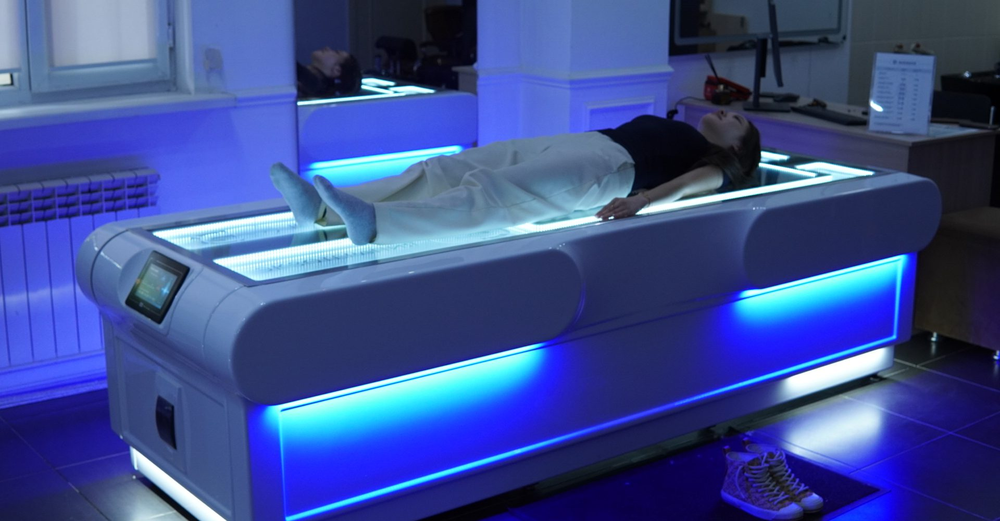

О клинике
Врачи, диагностика и восстановление —
в одной клинике
AIVA CLINIC объединяет консультации врачей, диагностику, физиотерапию и восстановление. К нам можно обратиться с жалобами на самочувствие, для обследования или подбора программы реабилитации.
-
Начинаем с консультации
Важно понять, что беспокоит человека, как давно появились жалобы и какие обследования или лечение уже проводились.
-
Подбираем помощь индивидуально
Учитываем состояние здоровья, противопоказания и цели пациента при выборе обследований, лечения и восстановления.
-
Объясняем дальнейшие шаги
Пациенту важно понимать, зачем назначена процедура, как подготовиться и когда необходим повторный приём.


Первый прием
С чего начать
заботу о здоровье
Запись
Если вы не знаете, к какому врачу обратиться, свяжитесь с администратором. Мы поможем выбрать специалиста и удобное время для консультации.
Консультация врача
На приём можно взять результаты предыдущих обследований и список принимаемых препаратов, чтобы врач мог учесть их при консультации.
Обследование и восстановление
Подобрать необходимый объём диагностики поможет врач. Программа восстановления может объединять ЛФК, массаж и аппаратные процедуры по показаниям.


к активной жизни
Запись на приём
Запишитесь
в AIVA CLINIC
Сделайте первый шаг к заботе о своём здоровье — запишитесь на консультацию.
Для записи свяжитесь с клиникой напрямую
Записаться